LinkGroupz Guide
Keep the web pages you open every day in groups, and open a whole group in Chrome, Edge or Whale at once — or just one page — from the menu bar (the system tray on Windows).
%APPDATA%\LinkGroupz and the extension folder is %APPDATA%\LinkGroupz\chrome-extension. See INSTALL.md for installation.Overview
#tag, alias or URL.You need macOS 13 (Ventura) or later on an Apple Silicon (M1 or later) Mac, or Windows 10 · 11 (64-bit), and one of Google Chrome, Microsoft Edge or Naver Whale. It doesn't run on Intel Macs.
Installation
- Double-click the downloaded
LinkGroupz-x.y.z.dmg. - Drag the LinkGroupz icon to the Applications folder.
- Open LinkGroupz from the Applications folder.
If a security warning appears the first time
The app isn't notarized by Apple, so the first time you open it macOS blocks it with “LinkGroupz” Not Opened. Click Done and allow it once as follows. Don't click “Move to Trash”.

- Open System Settings → Privacy & Security.
- In the Security section near the bottom, click Open Anyway next to “LinkGroupz” was blocked to protect your Mac.
- Enter your Mac password (or use Touch ID) and click Open Anyway in the next window. This item only shows for about an hour after the warning, so if you can't see it, open the app once more.

xattr -dr com.apple.quarantine /Applications/LinkGroupz.appFirst setup
The first time you open the app, the manager and the Welcome window appear. You can open the welcome window again any time from the LinkGroupz menu bar icon (three cards) → Guide. To have it start after a restart, turn on Open at Login in Settings.
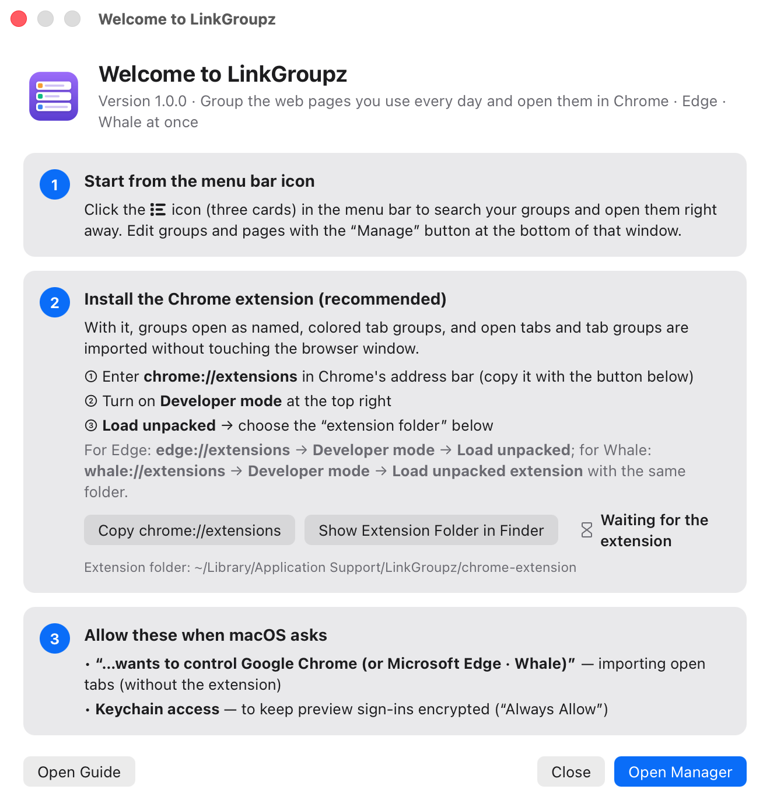
Install the extension (recommended)
The app works without the extension, but with it you can:
- Open groups as named, colored tab groups (otherwise all pages open in a new window)
- Import the browser's tab groups as they are
- Import tabs without touching the browser window
- Enter
chrome://extensionsin Chrome's address bar. (You can copy it with the button in the welcome window.) - Turn on Developer mode at the top right.
- Click Load unpacked and choose this folder:
~/Library/Application Support/LinkGroupz/chrome-extension
Show Extension Folder in Finder in the welcome window opens it. In the folder picker you can also press ⌘⇧G and paste the path. - You're done when the welcome window shows Extension installed.
If you also use Edge or Whale, load the same folder there too. The extension is detected per browser.
- Edge:
edge://extensions→ turn on Developer mode → Load unpacked → choose the same folder - Whale:
whale://extensions→ turn on Developer mode → Load unpacked extension → choose the same folder
chrome://extensions · edge://extensions · whale://extensions) of each browser that has it.Allow these when macOS asks
| Prompt | When | Click |
|---|---|---|
| “LinkGroupz” wants access to control “Google Chrome” (or “Microsoft Edge” · “Whale”) | The first time you import open tabs from that browser without the extension | Allow |
| LinkGroupz wants to use your confidential information stored in “LinkGroupz Preview Sign-in Cookies” in your keychain | When you first open a preview, or click Check Saved Sign-ins in Settings (it may ask again after an update) | Enter your Mac login password, then Always Allow |

Using LinkGroupz
Open from the menu bar
Click the LinkGroupz icon (three cards) in the menu bar at the top of the screen to see your groups.
- Click a group card → opens all its pages in the group's browser (the Chrome · Edge · Whale icon at the right end of the card). The number left of the icon is the page count.
- Expand with › and click a page → opens just that page. Collapse a group with ⌄, or all of them with Collapse all groups next to the search field.
- Sections appear in the same order as in the manager. Click a section name to collapse or expand it.
- Type in the search field at the top to filter right away; matching text is highlighted.
- Keyboard: when the window opens, choose a section, group or page with ↓ ↑ and open it with Enter. → expands a group or section and ← collapses it. While searching, the top result is selected so you can open it with Enter. Tab opens the right-click menu of the selected row. Esc clears the search, and pressing it again closes the window.
- Right-click: right-click a section, group or page for the same menu as in the manager. Items that need typing or confirmation (edit, add page, preview, delete) continue in the manager.
- Drag and drop: drag groups, sections and pages to reorder them, drop a group on a section header to put it in that section, and drop a page on another group to move it there.
- Window size: drag the window edges to resize; it keeps that size. To reset, use the 📌 button at the bottom → Reset Window Size.
- Detach from the menu bar: 📌 → Detach from Menu Bar. A detached window doesn't close when you click elsewhere, and you can drag it by the top strip or around the search field to put it anywhere (it opens there next time). It stays open after you open a group. 📌 → Attach to Menu Bar puts it back.
- Buttons at the bottom: Manage (manager) · Settings · Guide (welcome window) · 📌 (detach · window size) · Quit
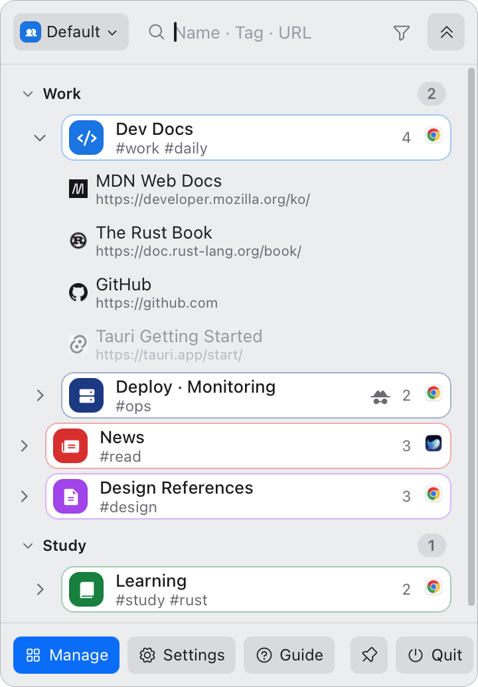
Manager
It opens the first time you start the app; after that, open it with Manage at the bottom of the menu bar window or from the Dock icon. To open the manager every time the app starts, set Settings → Window at launch to Manager (the default is the menu bar window). If the app is already running, opening LinkGroupz again from the Applications folder brings the manager to the front. (It doesn't open when the app starts at login.) Sections and group cards are on the left, the selected group's pages on the right. The current version and the Settings button are at the bottom right.
Hide the sidebar with the ▥ button at the top of the sidebar, and show it again with the same button at the top left of the window.
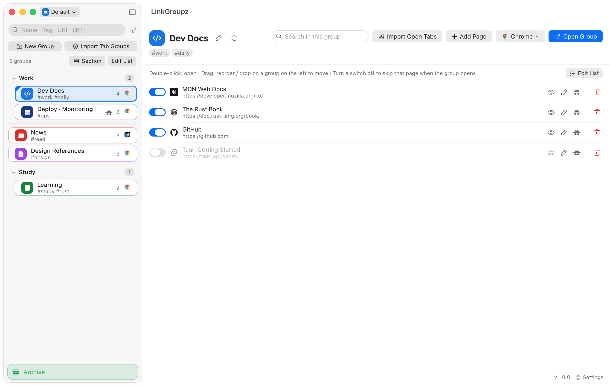
| To do this | Do this |
|---|---|
| New group | New Group below the search field on the left, or right-click the group list → New Group |
| Change a group's name, color, icon or tags | The pencil ✎ next to the group name. Pick one of 40 built-in icons (folder · code · server · DB · chart, etc.) or use your own with Choose Image…. Your image is cropped to a square from the center and copied to the app data folder, so it stays even if you delete the original. There are 19 colors; Chrome tab groups only have 9, so app-only colors (navy · mint · coral, etc.) open in the closest Chrome color |
| Add a page | Add Page → URL · alias (if the alias is empty, the address is shown) |
| Open a whole group | Open Group, or double-click the group in the list on the left |
| Open a page | Double-click the page, or right-click → Open |
| Open in a new window | Right-click a group or page → Open in New Window. Even if the browser is already open, it opens a new window instead of adding to the current one (as a tab group in that window with the extension) |
| Open in a private window | Right-click a group or page → Open in Private Window, or the hat-and-glasses button at the right of a page row. Opens a new private window (an InPrivate window in Edge) of the group's browser. When you close a private window opened from the manager, the manager comes back to the front (macOS) |
| Always open a group privately | Edit the group (pencil ✎) → Always Open in Private Window under Browser, or right-click the group → Always Open in Private Window. Such groups always open in a private window — from the group, a page or the menu bar — and their card shows a hat-and-glasses mark |
| Edit or delete a page | ✎ · 🗑 at the right of the row (the trash deletes right away without asking) |
| Skip a page when the group opens | Turn off the switch at the left end of the page row. Pages that are off look dimmed and don't open with the group (they still open on their own). It's saved in the same format as the original LinkGroups |
| Search in this group | Search in this group on the group name row. Finds page names and URLs in that group and highlights matches |
| Sync with a browser tab group | The ⟳ button next to the group name (or right-click the group → Sync with Browser Tab Group…). Compares with the tab group of the same name open in the group's browser, so you can add pages that are only in the browser and remove pages that are only in this group. Replace All makes it match the tab group exactly (including order). It reads without touching the browser |
| Keyboard | ⌘1 (Ctrl1 on Windows) search field · ↓ into the group list · ↑ ↓ between groups and sections · on a section, ← → collapse and expand · on a group, → to the page list; in the page list, ← back to the group list · Return open · Tab right-click menu |
| Undo | ⌘Z (CtrlZ on Windows) undoes what you just did, and ⌘⇧Z (CtrlY or Ctrl⇧Z on Windows) redoes it. It covers changes to groups, pages, sections and the archive (add · edit · delete · move · archive · restore · switches · sync · import), in the menu bar window too. The last 50 changes per profile are kept while the app is running and cleared when you quit. In a text field, it undoes your typing instead. Tabs opened in the browser and settings aren't undone |
| Reorder | Drag and drop groups and pages. A blue line shows where a group will go (Sections) |
| Select several groups | ⌘ (Ctrl on Windows) or ⇧ click. Selected cards get a blue top-left corner. Drag them together, or right-click to move them to a section or the archive, or delete them at once |
| Move to another group | Drag a page onto a group on the left, or right-click → Move to Group |
| Put away without deleting | Right-click a group or page → Move to Archive (Archive) |
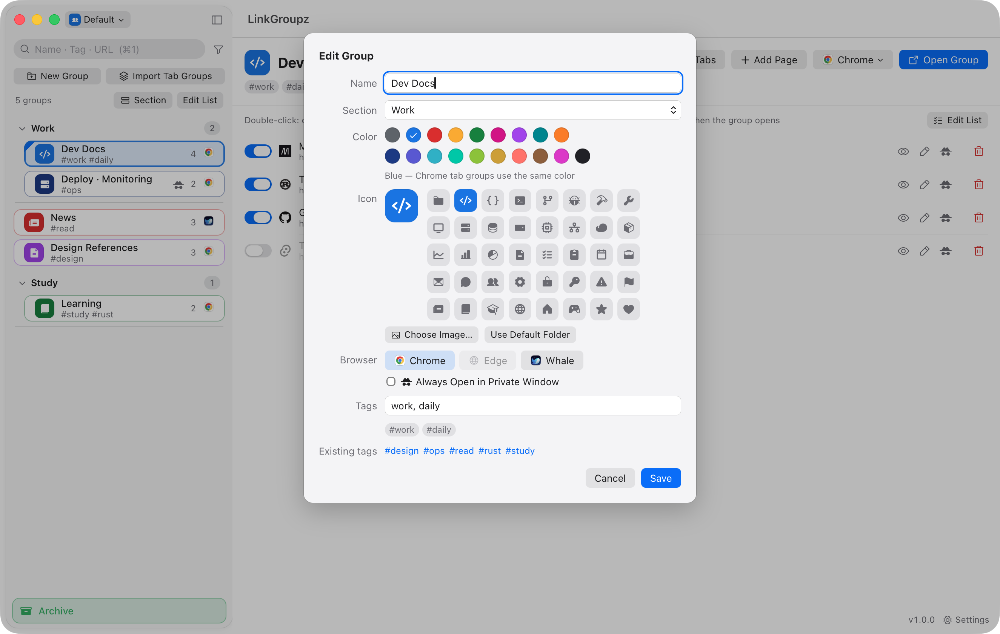
Profiles
To keep completely separate group lists — for example work and personal — create profiles. Each profile has its own groups, sections, archive and backups, and the manager, the menu bar window and search show only the current profile.
| To do this | Do this |
|---|---|
| Create a profile | Settings → Profiles: type a name and click Add. Your original list is the Default profile |
| Switch profiles | The profile button (👥 name ▾) left of the search field in the menu bar window or at the top left of the manager, right-click the menu bar icon → Profiles, or Switch in Settings → Profiles. All windows switch together, and the app starts with that profile next time |
| Rename, change icon or color, delete | Edit (40 built-in icons or your own image, 19 colors, like group icons) · Delete in Settings → Profiles. The icon shows on the profile button. The default profile can't be deleted. A deleted profile's data isn't erased but moved to deleted-profiles in the backup folder, so you can bring it back by importing the data.json inside |
Export, import, automatic backups and restore in Settings → Data · Backups apply to the current profile. Other settings, such as the extension, shortcut and how groups open, are shared by all profiles.
Sections
With many groups, fold them into sections. The order is section > group > page, and groups are what you open. Sections and groups outside sections can be mixed in any order, and groups inside a section are indented. An expanded section has a line under its last group.
| To do this | Do this |
|---|---|
| Create a section | The Section button above the group list, right-click an empty part of the list → New Section, right-click a group → New Section (creates a section in that group's place with the group in it), or drag a group onto another group (creates a section with both) |
| Put groups in or take them out | Drag a group onto a section name or between groups in a section, right-click a group → Section, right-click a section → Add Group, or Section in Edit Group. To take it out: right-click → Section → No section, or drag it to the line at the end of the section or outside it |
| New group in a section | Right-click the section → New Group… |
| Collapse or expand | Click the section name. The menu bar window follows |
| Reorder | Drag the section name, or right-click the section → Move Up · Move Down |
| Rename or delete | Right-click the section → Edit Section… · Delete Section… (its groups stay where the section was) |
When you drag a group, dropping it on the upper or lower part of a row moves it there (a line shows), and dropping it in the middle of a group outside sections creates a section with both (a blue outline). An indented line means inside the section; a line to the left edge means outside.
Sections are saved in data.json in the same format as the original LinkGroups, so they read correctly in both apps.
Preview
Click 👁 at the right of a page row to show a preview next to it. Open Larger opens it in a full-size window. Drag the edges of a preview window to resize it; it opens at that size next time (separately for the small preview and the larger window).
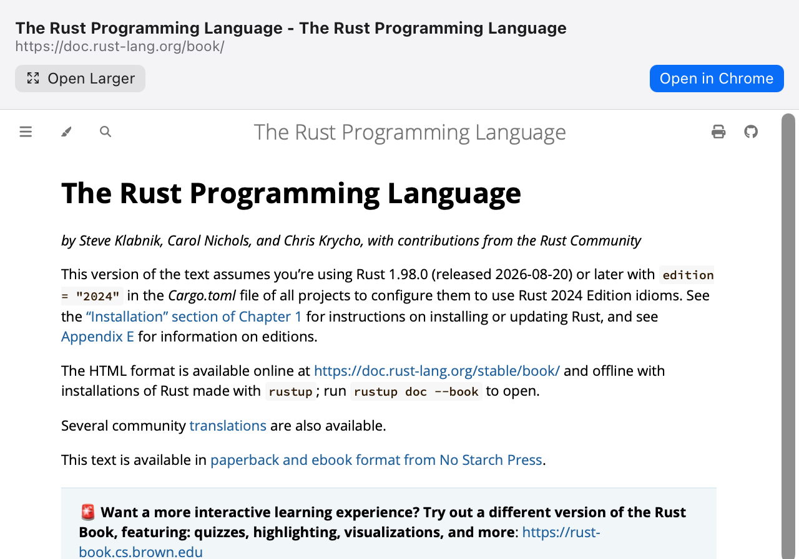
Edit list · delete or move at once
Click Edit List above the group list or the page list to show checkboxes. You can then Archive, Delete or Move to Group the checked items at once. You can also select several with ⌘ or ⇧ click.
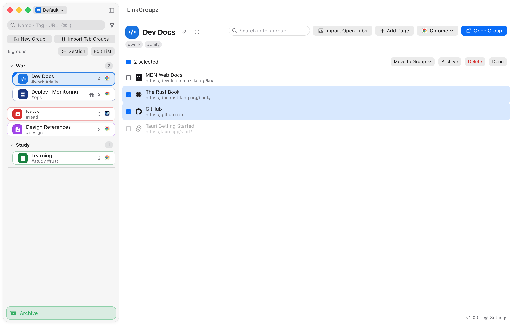
If the target group already has the same address, the page isn't added twice; it's only removed from the original group.
Archive
Put groups and pages you don't need right now — but don't want to delete — in the archive. Archived items don't appear in the menu bar, the group list or search, and you can bring them back any time.
| To do this | Do this |
|---|---|
| Archive | Right-click a group or page → Move to Archive. You can select several. Or check items in Edit List and click Archive |
| Open the archive | The green Archive button at the bottom of the group list in the manager (the number is how many are archived) |
| See archived items | Archived Groups and Archived Pages start collapsed; expand them with ›. Expand an archived group once more to see its pages |
| Search the archive | The search field at the top right of the archive. Same rules as the manager search (all words must match, #tag only matches tags), and archived pages also match the name of the group they came from. Only sections with results are expanded |
| Restore a group | Restore on the archived group row → it goes back to the end of the group list. Pages, icon and browser stay the same |
| Restore a page | Choose a group from the Restore menu of an archived page. The original group is at the top if it still exists, and New Group… creates a group with the original group's name and color |
| Delete for good | 🗑 at the right of the row → Delete Permanently (you can undo with ⌘Z until you quit the app) |
| Archive or restore by dragging | Drop a group, section or page on the Archive button at the bottom left to archive it (a section archives its groups and is removed). In the archive, drag a group into the group list on the left to restore it right there, or a page onto a group to restore it into that group |
| Organize inside the archive | Drop an archived page on an archived group to put it inside, and drag archived groups, or pages inside an archived group, to reorder them. An expanded archived group has Restore and 🗑 for each page |
| Open directly | Double-click an archived group or page to open it without restoring. Clicking the “Archived Groups” or “Archived Pages” title also expands it |
If the group you restore a page to already has the same address, it isn't added again; it's only removed from the archive.
Browser per group (Chrome · Edge · Whale)
Each group has the browser it opens in. New groups use Chrome, and the icon at the right end of a group card in the list or the menu bar shows which browser it uses.
- Change it: the browser button left of “Open Group” on the group page, right-click the group → Browser, or Browser in Edit Group (pencil ✎)
- A single page in a group also opens in that group's browser.
- Groups made by importing tab groups from Edge or Whale start with that browser.
Import open tabs
Click Import Open Tabs on a group page and choose Chrome, Edge or Whale under Browser at the top to see that browser's open tabs by window and tab group. Pick some and click Add to put them in the group.
- The checkbox on a window or tab group row selects or deselects all its tabs
- Addresses already in the group show as Already added and can't be picked.
- With Use tab titles as aliases on, tab titles become display names.
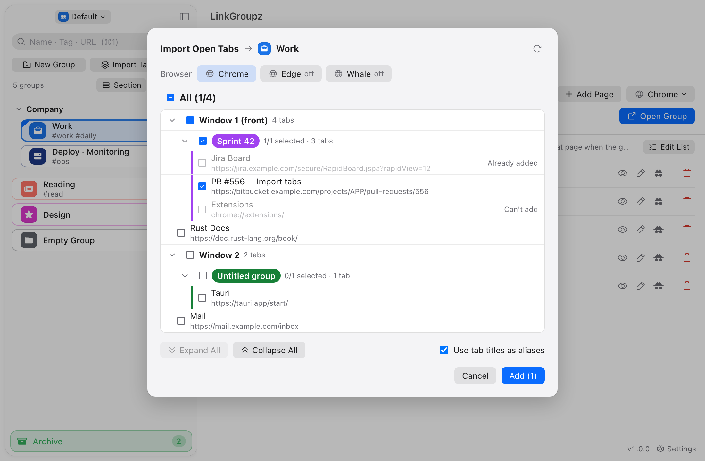
Import tab groups
Import Tab Groups below the search field in the manager turns the chosen browser's (Chrome · Edge · Whale) tab groups into groups with the same name and color. New groups open in the browser they came from. Even without the extension, tab groups are read from the session the browser saves.
- If a group with the same name exists, the pages are added to the existing group instead of creating a new one.
- Pages already in the existing group are skipped as Already added.
- The button shows what will happen, for example Import (2 new groups · added to 1 existing group · 6 pages)
- Turn on Show closed tab groups to list the closed tab groups saved in the browser, collapsed, below the list. Pick from them like open groups. If the browser is closed, all saved groups are shown as closed.
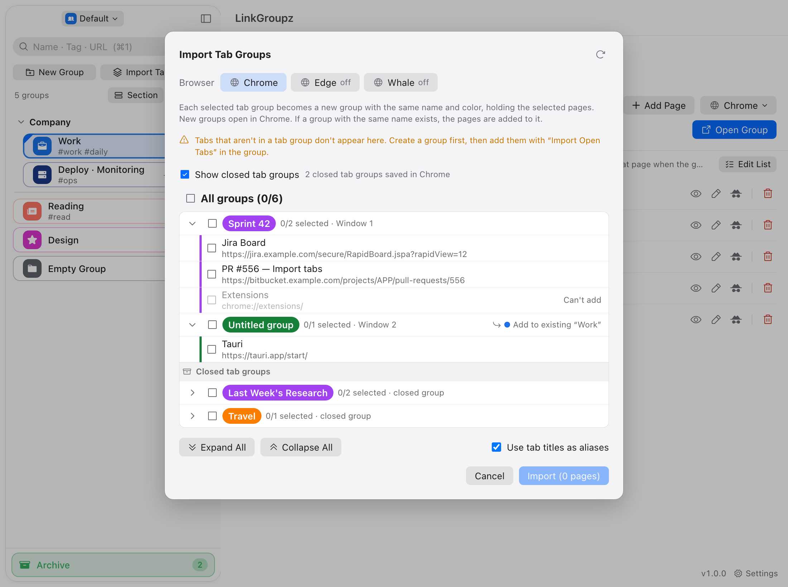
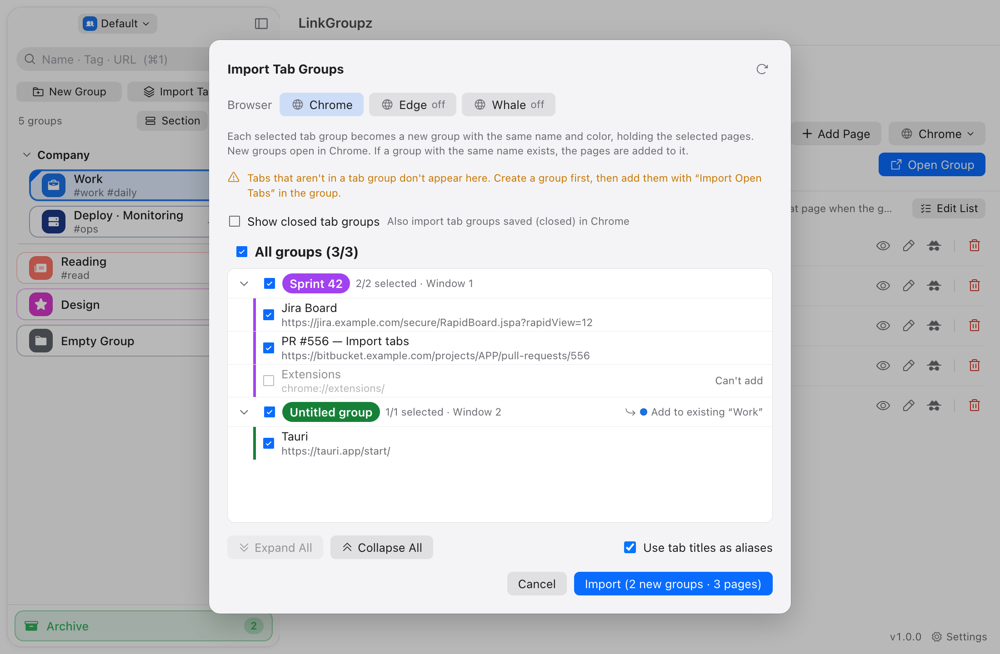
Search
| Type | Finds |
|---|---|
wiki | Items whose group name, tag, alias or URL contains “wiki” |
#work | Groups tagged “work” |
#work jira | Pages containing “jira” in groups tagged “work” (all words must match) |
Matching text is highlighted in yellow in group names, tags, page names and URLs. While searching, every section with a matching group is expanded. Search in the menu bar window works the same way.
Choose where to search: in the filter (funnel) button next to the search field, turn Name (groups · pages), Tags and URL on or off. The manager, the menu bar window and the archive share it, and the button turns blue when only some are on. A #tag word always searches tags.
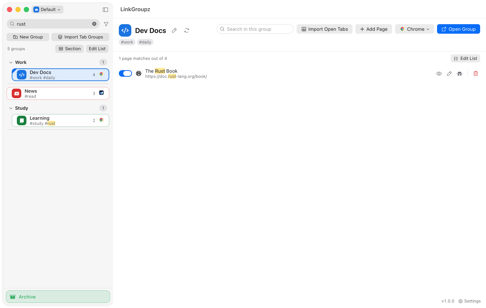
Settings
Open it with Settings at the bottom of the menu bar window or at the bottom right of the manager.
Turn on Open at Login to have LinkGroupz appear in the menu bar when you restart or log in again. No window opens then.
Add, edit (name · icon · color) and delete profiles in Profiles (Profiles).
Appearance: in Appearance near the bottom of Settings, choose System, Light or Dark. With System, the app follows the macOS or Windows appearance. Open windows change right away.
Language: in Language near the bottom of Settings, choose System, 한국어 or English. With System, the app is in Korean when macOS or Windows is set to Korean, and in English otherwise. Open windows update right away.
Window at launch: when you open the app yourself, the menu bar window (default) or the Manager opens. The first time, the welcome window and the manager open.
With Show in Dock on (the default, macOS), you can switch back to LinkGroupz from the Dock or with ⌘Tab, and clicking the Dock icon opens the manager. Turn it off to use only the menu bar icon.
Shortcut: open the menu bar window from the keyboard without clicking the icon. Click None under Settings → Shortcut and press the shortcut you want (e.g. ⌥Space). It works from any app, and you can search right away. Pressing it again while the window is open opens the manager. Remove it with Clear.
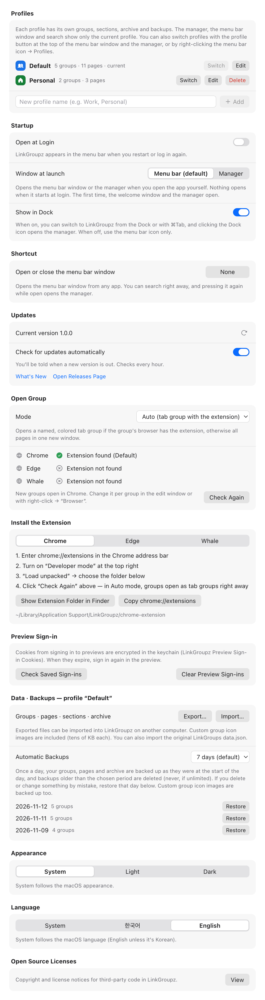
| How groups open | What happens |
|---|---|
| Auto (default) | A tab group if the group's browser has the extension, otherwise all pages in a new window |
| Always a tab group | Always a tab group (without the extension, an error page opens) |
| Always a new window | Always all pages in a new window of the group's browser |
Updates shows the current version and the update status, and turns automatic checks on or off (Automatic updates).
Check Saved Sign-ins in Preview Sign-in shows how many sites are saved (macOS may ask for your keychain password because it reads the keychain). You can also clear preview sign-ins here.
Data · Backups (Data)
| To do this | Do this |
|---|---|
| Move to another computer or keep a copy | Export… saves groups, pages, sections and the archive to a single file. Custom group icon images are included |
| Import from a file | Choose a file with Import…; it shows what's inside, then choose Replace with This (replace your list with the file) or Add to Current List. You can also import the original LinkGroups data.json. The list from before a replace is kept in the backup folder |
| Automatic backups | Once a day, the state at the start of the day is backed up (custom group icon images too). Keep them Off · 3 · 7 (default) · 14 · 30 days · Unlimited; older backups are deleted (never, if unlimited) |
| Go back to an earlier state | Pick a date in the backup list and click Restore. The list right before restoring is kept too, so you can go back again |
Automatic updates
New versions are published on the LinkGroupz releases page (Open Releases Page in Settings → Updates). The app checks it and updates itself. The current version shows at the bottom right of the manager and in Settings → Updates, and ↻ in Settings → Updates checks for a new version right away.
| To do this | Do this |
|---|---|
| Check now | ↻ in Settings → Updates. If there's a new version, an Update to x.y.z button appears, and New version x.y.z shows at the bottom right of the manager |
| Update | The Update to x.y.z button in Settings, or Update Now in the update window. A progress bar fills as it downloads and installs, the signature is checked, and LinkGroupz quits briefly and opens again (Windows installs without an installer window too). Your groups, pages, archive and settings stay as they are |
| Turn automatic checks off or on | Check for updates automatically in Settings → Updates. Even when it's off, you can check with ↻ |
- With automatic checks on (the default), the app checks 30 seconds after it starts and every hour after that. When there's a new version, the update window shows what's new and asks Update Now / Later.
- A version you postpone with Later isn't asked about again until a newer one comes out. You can still update from Settings in the meantime.
- Downloaded files are installed only if their signature matches. If it doesn't, the update window says “The downloaded file's signature didn't match, so it wasn't installed.” and nothing changes.
- If macOS asks for keychain access after an update, enter your Mac login password and click Always Allow. If you use the extension, reload it once in the browser.
- The first time you open the app after an update, a window shows what's new. You can see it again with What's New in Settings → Updates.
Data · update · uninstall
| What | Where |
|---|---|
| Groups · pages · archive | ~/Library/Application Support/LinkGroupz/data.json |
| Automatic backups | ~/Library/Application Support/LinkGroupz/backups |
| Groups and backups of added profiles | ~/Library/Application Support/LinkGroupz/profiles/<profile id> (the default profile uses data.json · backups above) |
| Chrome extension | ~/Library/Application Support/LinkGroupz/chrome-extension |
| Site icons | ~/Library/Application Support/LinkGroupz/favicons |
| Group icon images | ~/Library/Application Support/LinkGroupz/icons |
| Preview sign-in cookies | The keychain item “LinkGroupz Preview Sign-in Cookies” |
Back up or move to another Mac: save a file with Export… in Settings → Data · Backups, and bring it in with Import… on the other Mac. Automatic backups are set and restored in the same place (Settings).
Update: with automatic updates on, the app asks and installs by itself (Automatic updates). To do it yourself, copy LinkGroupz from the new DMG over the one in Applications and reload the extension in the browsers that have it (Chrome · Edge · Whale). Your data stays.
Uninstall: Quit in the menu bar window → move LinkGroupz in Applications to the Trash → remove the extension from Chrome · Edge · Whale. To delete your data too, delete the LinkGroupz folder above and the keychain item.
FAQ
Groups or pages disappeared from the list
First check the profile button (top left of the menu bar window and the manager) — you may have switched to another profile. Then open the Archive at the bottom left of the manager. Archived items don't appear in the list, the menu bar or search; Restore them from there. If you just deleted something by mistake, undo with ⌘Z (CtrlZ on Windows); if you've restarted the app since, Restore the previous day's backup in Settings → Data · Backups.
The welcome window keeps saying “Waiting for the extension”
Check in chrome://extensions that LinkGroupz Tab Groups is on and that the loaded folder is ~/Library/Application Support/LinkGroupz/chrome-extension. It's detected even in another Chrome profile. For Edge, check the same in edge://extensions. Settings shows what's detected per browser.
A group opens as plain tabs instead of a tab group
Check that the group opening mode in Settings isn't Always a new window and that the extension is detected. After updating the app, reload the extension in the browsers that have it.
A linkgroupz.invalid error page opens
It appears when the app tries to open a tab group without the extension, or with the extension turned off. Turn the extension on, or set the group opening mode in Settings to Auto.
The preview keeps showing a sign-in page
Sign in in the preview's Open Larger window. When the keychain prompt appears, click Always Allow so the sign-in is saved.
Import Open Tabs shows nothing
The chosen browser must be running. Without the extension, you need to allow “control Google Chrome (or Microsoft Edge · Whale)”. If you denied it, turn on the browser for LinkGroupz in System Settings → Privacy & Security → Automation.
The browser window flashes when importing tabs
LinkGroupz reads open tabs and tab groups from the session file the browser saves by itself, without touching the browser. Only when that file can't be read does it briefly open a temporary tab to get them from the extension, which brings the browser to the front for a moment. Tabs you changed a few seconds ago may not be saved yet, so try again shortly.
LinkGroupz, Edge or Whale isn't in the Automation list
The list only shows items macOS has asked about after the app actually tried to control that browser; you can't add them yourself. With the extension, LinkGroupz doesn't control the browser, so it's normal not to be listed. It appears after the first time you import open tabs from that browser without the extension. Opening groups doesn't need this permission.
Edge (or Chrome · Whale) doesn't open a private window
If your organization's policy turns off private (InPrivate) windows in that browser, the browser opens a normal window instead. LinkGroupz doesn't open it in a normal window and shows a message instead. Switch that group to another browser to open it privately.
A LinkGroupz icon appeared in the Dock
It shows in the Dock by default. To use only the menu bar icon, turn off Settings → Show in Dock.
LinkGroupz doesn't start after a restart
Check that Open at Login is on in Settings. If it is and it still doesn't start, check that LinkGroupz is allowed in System Settings → General → Login Items. An app running from the DMG can't be registered, so move it to the Applications folder first.
Checking for updates fails
“Couldn't check for a new version” means you should check your internet connection. “There is no release for this computer yet” means that version isn't out yet for this computer (OS · CPU).
The keychain password prompt appears again
After the app is updated, macOS may ask again for access to the preview sign-in cookies. Enter your Mac login password and click Always Allow; it won't ask again for that version.